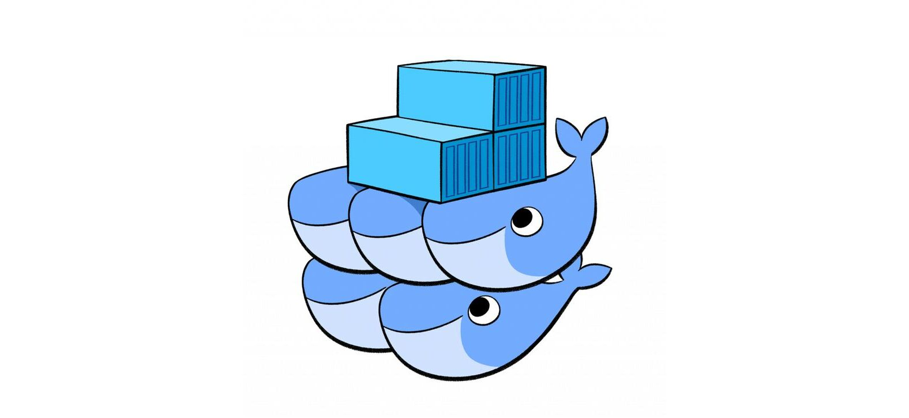

Swarm Orchestrator e i Secret Interni
Quando si usa Docker, specialmente l'orchestrator Swarm, si può fare affidamento sui secret gestiti internamente. Essendo un comando di gestione del cluster, deve essere eseguito sul nodo manager dello swarm. È necessario prima creare il cluster Docker Swarm se non è già presente:
docker swarm initGestione sicura dei Secret
Il seguente comando, sebbene raccomandato dalla documentazione Docker, presenta un pericolo nascosto. Se lanciato direttamente da shell (come bash), sarebbe ricercabile a posteriori tramite il comando history, esponendo pericolosamente il token:
echo "sUp3R_seCr3t_Pa55w0Rd" | docker secret create db_password -Non conforme — il secret è visibile in cronologia.
Un'alternativa sicura è digitare solo il comando:
docker secret create db_password -E poi, interagendo con il programma stesso, inserire il valore del secret:
sUp3R_seCr3t_Pa55w0Rd [CTRL+D]In questo modo solo il comando (senza il valore del secret) viene salvato in cronologia shell.
Recupero dei Secret con Java
Per recuperare il valore del secret dal runtime Java, è necessario tenere presente che i secret gestiti da Docker Swarm finiscono automaticamente in `/run/secrets/`. Questo permette di accedervi come se fossero un semplice file montato sul filesystem Docker.
import java.io.IOException;
import java.nio.file.Files;
import java.nio.file.Paths;
public class Secrets {
public static void main(String[] args) {
String secret = readDockerSecret("db_password");
System.out.println("secret: " + secret);
}
private static String readDockerSecret(String secretName) {
String secretPath = "/run/secrets/" + secretName;
try {
return new String(Files.readAllBytes(Paths.get(secretPath))).trim();
} catch (IOException e) {
System.err.println("Error while reading the secret: " + e.getMessage());
return null;
}
}
}Dockerfile
FROM alpine:latest
WORKDIR /work/secrets/
COPY Secrets.java /work/secrets/
# Install JDK
RUN apk add openjdk8
ENV JAVA_HOME /usr/lib/jvm/java-1.8-openjdk
ENV PATH=$PATH:$JAVA_HOME/bin
# Compile
RUN javac Secrets.java
ENTRYPOINT java SecretsBuild dell'immagine
docker build -t java-app:latest .Best Practice: non includere i secret nelle immagini
È buona pratica non mettere i secret all'interno delle build delle immagini, poiché verrebbero esposti a chiunque la utilizzi. I secret dovrebbero essere inclusi con il flag --secret durante l'avvio del servizio:
docker service create \
--name java-app \
--secret db_password \
java-appOutput del Secret
Il secret è correttamente recuperato e visibile nei logs:
docker logs $container_idsecret: sUp3R_seCr3t_Pa55w0Rd